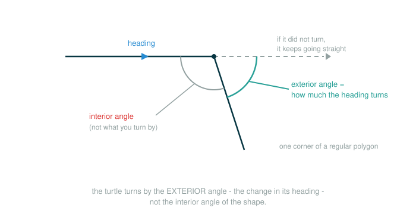

3.2 Turtle Graphics and Recursive Drawing
Until now, every Scheme program you have written has produced a value: a number, a pair, a list. This lesson adds something new. A Scheme program can also produce an effect on a world. The world here is a drawing canvas, and the program moves a small cursor across it, leaving lines behind.
By the end you will be able to do four things: drive a turtle with the commands fd, rt, and friends; sequence several commands with the begin special form; pass a drawing action to a higher-order procedure so the same shape can be reused; and read a recursive drawing program, the Sierpinski triangle, as a tree of procedure calls that happen to leave ink on a canvas. The big idea is that recursion and higher-order procedures are not just about computing numbers. The exact same tools build pictures.
A Pen-Carrying Cursor
Picture a tiny robot turtle sitting in the middle of a sheet of paper. It is holding a pen. At every moment the turtle knows three things about itself:
position: where it is on the paper
heading: which direction it is facing
pen: down means it draws as it moves, up means it moves silentlyYou do not steer the turtle with a steering wheel pointed at a destination. You give it relative commands from where it already stands: go forward this far, turn right this many degrees. If the pen is down when it moves forward, a line appears under its path. If it only turns, the heading changes and no line appears. Lifting the pen lets the turtle relocate without scribbling a connecting line.
That is the entire model. Everything in this lesson is built from a turtle that remembers a position, a heading, and a pen, and obeys a handful of commands.
The Turtle Commands
The Scheme interpreter that accompanies this course includes Turtle graphics, a drawing environment that comes from the Logo language. Single-argument procedures move and turn the turtle. The common ones have short abbreviations, which is why you will see fd instead of forward and rt instead of right.
Here are the commands you will use:
(fd 100)(rt 90)(lt 120)(penup)(pendown)fd moves the turtle forward by the given number of units, drawing a line if the pen is down. rt turns the turtle right (clockwise) by the given number of degrees. lt turns it left (counter-clockwise). penup lifts the pen so movement leaves no line, and pendown puts it back so movement draws again. Turning never moves the turtle; moving never changes the heading. Each command does exactly one job.
Look at one command token by token, so the shape of a turtle call is clear:
(rt 90)(rt 90)
├─ ( ........... opens the call expression
├─ rt .......... the turtle command: turn right
├─ 90 .......... how many degrees to turn
├─ ) ........... closes the call expression
└─ performs turns the turtle 90 degrees clockwise; nothing is drawnNotice the final row. For an ordinary arithmetic call you would write "evaluates to" and a number. For a turtle command the interesting thing is not the value it returns; it is the action it performs on the canvas. So the final row names the action.
Sequencing With begin
A turtle program is usually a list of actions in order: go forward, then turn, then go forward again. Scheme needs a way to bundle several expressions into one, because some forms have room for only a single expression where you want several.
The begin special form does exactly this. It evaluates its sub-expressions one after another, in order, and returns the value of the last one. For drawing, the ordered effects matter far more than the returned value.
(begin (fd 50) (rt 144))Walk the tokens of that line:
(begin (fd 50) (rt 144))
├─ ( ............ opens the begin form
├─ begin ........ the special form: run the following expressions in order
├─ (fd 50) ...... first action: move forward 50 units
├─ (rt 144) ..... second action: turn right 144 degrees
├─ ) ............ closes the begin form
└─ performs moves forward 50, then turns right 144; returns the last valueThe reason begin is a special form, and not an ordinary procedure, is the same reason if is special: its sub-expressions are run for their effects in a controlled order, not collected as argument values. You can read (begin (fd 50) (rt 144)) out loud as "first move forward 50 units, then turn right 144 degrees."
Repeating an Action
Drawing a square means doing the same two commands four times. Rather than copy them out, the source defines a repeat procedure that runs a drawing action a fixed number of times. Here is the official definition, exactly as it appears in the text:
(define (repeat k fn)
(if (> k 0)
(begin (fn) (repeat (- k 1) fn))
nil))repeat takes a count k and a zero-argument procedure fn. If k is still positive, it runs fn once and then calls itself with k reduced by one. When k reaches zero, it stops and returns nil. This is ordinary recursion: a base case (k is not greater than 0) and a recursive case that shrinks toward it.
This is also the first place where begin earns its keep. The recursive branch of the if must do two things in sequence: run fn, then call repeat again. An if branch holds a single expression, so without begin there would be no room for both. Wrapping them in begin makes the pair count as one expression.
Trace the count for a square, where the action is "forward then turn right 90":
repeat 4: run the action, then repeat 3
repeat 3: run the action, then repeat 2
repeat 2: run the action, then repeat 1
repeat 1: run the action, then repeat 0
repeat 0: k is not greater than 0, so stop and return nilThe action runs four times. Each run draws one side and turns the corner. After four turns of the turtle has rotated , a full circle, so it ends facing its original direction.
A Bridge: A Nested Star, Written With begin
Before the official transcript, here is a slightly gentler version of the same idea so you can see the layering clearly. This bridge is not from the source text; it spells the nested action out with begin so each line reads as one ordered command.
(repeat 5
(begin (fd 50)
(repeat 5
(begin (fd 50)
(rt 144)))
(rt 144)))Read it in two layers. The outer repeat runs its action five times. That action moves forward, then runs a whole inner five-step turning pattern, then turns right :
outer repeat (5 times):
move forward 50
run the inner five-step pattern
turn right 144The inner repeat is itself five moves of forward-then-turn. A repeated action can contain another repeated action, and that nesting is where complex pictures start to come from simple commands. With the bridge in mind, here is the official version.
The Official Star Transcript
The source introduces begin and turtle commands together with this interactive session. The action passed to the outer repeat is built with a lambda rather than begin, because a lambda body may already contain several expressions in sequence. This is the first time you see a lambda whose body is more than one expression: unlike an if branch, a lambda body runs each of its expressions in order on its own, so it needs no begin to hold them together. Reproduce it exactly:
> (define (repeat k fn) (if (> k 0)
(begin (fn) (repeat (- k 1) fn))
nil))
> (repeat 5
(lambda () (fd 100)
(repeat 5
(lambda () (fd 20) (rt 144)))
(rt 144)))
nilThe outer action moves forward 100, draws a smaller five-step turning pattern, and turns right 144 degrees. The inner action moves forward 20 and turns right 144 degrees. Running this five times traces a star. The interpreter prints nil at the end because that is what repeat returns once the count runs out; the picture, not the value, is the point.
Notice how the inner lambda plays the role of fn for the inner repeat. The two repeated actions are completely separate procedures, one nested in the other. This is the same compositional move you have used to nest arithmetic; here it nests drawing.
Reusing a Shape With a Higher-Order Procedure
The Sierpinski drawing rests on one small higher-order procedure, tri, which draws a triangle. The clever part is that tri does not decide what a side looks like. It accepts the side action as an argument and simply arranges three of them around a triangle. Here is the official definition, verbatim:
(define (tri fn)
(repeat 3 (lambda () (fn) (lt 120))))tri takes a zero-argument procedure fn, the drawing action for one side. It calls repeat 3 with an action that runs fn and then turns left by 120 degrees. Three sides, three left turns. Because a triangle has three corners and a full turn is , each corner turns .
Walk the body one token at a time:
(repeat 3 (lambda () (fn) (lt 120)))
├─ ( .................... opens the call
├─ repeat .............. run the following action a fixed number of times
├─ 3 ................... the number of repetitions, one per side
├─ (lambda () (fn) (lt 120)) the side action: do fn, then turn left 120
├─ ) ................... closes the call
└─ performs draws three sides, turning left 120 degrees after eachThe reason fn is a procedure and not a number is the whole point of the abstraction. A number could only say how long a side is. A procedure can draw anything for a side: a straight line, or, as you are about to see, a smaller copy of the entire figure.
A Bridge: A Plain Triangle
To feel how tri works before the recursion arrives, give it the simplest possible side action: move forward a fixed distance. This call is a bridge for intuition; it is not in the source text, but it uses only the official tri.
(tri (lambda () (fd 100)))The argument (lambda () (fd 100)) is a zero-argument procedure that moves the turtle forward 100 units. tri runs it three times, turning left 120 degrees between runs, and the turtle traces a plain equilateral triangle. Once you can see that, the only change for Sierpinski is to make the side action draw a smaller figure instead of a straight line.
The Sierpinski Triangle
Sierpinski's triangle is a fractal. Each triangle is drawn as three smaller triangles whose vertices sit at the midpoints of the legs of the triangle containing them. Carried on forever it is a true fractal; carried to a finite depth it is a Scheme program. The source draws it with four definitions working together. Here they are, verbatim and complete:
(define (repeat k fn)
(if (> k 0)
(begin (fn) (repeat (- k 1) fn))
nil))
(define (tri fn)
(repeat 3 (lambda () (fn) (lt 120))))
(define (sier d k)
(tri (lambda ()
(if (= k 1) (fd d) (leg d k)))))
(define (leg d k)
(sier (/ d 2) (- k 1))
(penup)
(fd d)
(pendown))Read sier first. It takes a length d and a recursive depth k. It draws a triangle by handing tri a side action. That side action checks the depth: if k is 1, the side is a plain forward move of length d; otherwise the side is a leg, which is itself a recursive drawing.
Walk the side action inside sier token by token:
(if (= k 1) (fd d) (leg d k))
├─ if .......... special form: choose one branch by a condition
├─ (= k 1) ..... condition: is the recursion depth exactly 1
├─ (fd d) ...... then-branch: draw a plain side of length d
├─ (leg d k) ... else-branch: draw a recursive leg of length d at depth k
└─ performs at depth 1 draws a straight side; deeper, draws a smaller figureNow read leg. It draws one side of a Sierpinski triangle as two phases. First it calls sier with half the length and one less depth, which fills the first half of the side with a smaller Sierpinski drawing. Then it repositions the turtle to the next vertex without drawing a connecting line, by lifting the pen, moving forward the full length d, and putting the pen down again.
The first expression in leg's body is the recursive one, the call that fills the first half of the side with a smaller figure. Walk that call one token at a time:
(sier (/ d 2) (- k 1))
├─ ( ............ opens the call expression
├─ sier ........ the procedure: draw a Sierpinski figure
├─ (/ d 2) ..... first argument: half the current length
├─ (- k 1) ..... second argument: one less than the current depth
├─ ) ........... closes the call expression
└─ performs draws a smaller Sierpinski figure over the first half of the legAfter that recursive call, three more expressions reposition the turtle to the next vertex without drawing: (penup) lifts the pen, (fd d) moves forward the full leg length, and (pendown) puts the pen back down so later moves draw again.
The pen commands are not decoration. Without penup, the repositioning move would draw an unwanted line straight across the figure. sier and leg call each other: sier builds a triangle whose sides are legs, and each leg calls sier on a smaller scale. That pattern, two procedures defined in terms of each other, is mutual recursion.
The Official Demonstration Call
The source draws the full fractal with this single call:
(sier 400 6)That asks for a Sierpinski triangle of length 400 carried to depth 6. At depth 6 the mutual recursion between sier and leg produces a large, intricate figure made of many small triangles, all from the four short definitions above.
How the Recursion Unfolds
It helps to trace a small case so the tree of calls is visible. Take (sier 100 2). The numbers are smaller than the official (sier 400 6), which keeps the call tree readable while showing the exact same control structure.
(sier 100 2)
tri runs its side action three times, turning left 120 between sides
each side action: k is 2, not 1, so it calls (leg 100 2)
(leg 100 2):
(sier 50 1) draws a plain triangle of side 50 (base case, k = 1)
(penup) lift the pen
(fd 100) step to the next vertex without drawing
(pendown) pen down againRead it as tree recursion with visible effects. One call to sier produces three calls to leg, and each leg produces a call to sier one level smaller. The base case, k equal to 1, stops the descent by drawing a plain triangle instead of recurring further. Every call leaves marks on the same shared canvas, so the finished drawing is the accumulated effect of the whole tree.
Here is the shape of the result by depth, sketched in text. At depth 1 you get a plain triangle:
/\
/__\At depth 2, each side is replaced by a smaller triangular structure, so the figure becomes a triangle of triangles:
/\
/__\
/\ /\
/__\/__\The exact pixels depend on the turtle implementation, the starting heading, and line thickness. The structure is what is stable: the same triangular rule, reused at smaller and smaller scales.
⚠Common Beginner Traps
Trap 1: Expecting turtle commands to return a useful value. Commands like fd and rt are run for their effect on the canvas. repeat returns nil when it finishes. Watch the drawing, not the printed value.
Trap 2: Forgetting the turtle has state between commands. The turtle remembers its position, heading, and pen state. A command does not reset anything; it changes the turtle from wherever it already is, so a shape drawn after an earlier leftover turn comes out rotated or offset from where you expected it.
Trap 3: Confusing the inside angle of a shape with the turtle's turn. For an equilateral triangle the turtle turns at each corner, not the interior angle, because it turns through the outside of the path.
The figure below shows why the turn equals the exterior angle, the change in heading, rather than the interior angle of the shape.

Trap 4: Dropping begin in a recursive repeat. The recursive branch of the if in repeat must run fn and then recur. An if branch holds one expression, so the two actions must be wrapped in begin to count as one; without it the recursive (repeat (- k 1) fn) call is no longer part of the branch, so fn runs once and the loop never repeats.
Trap 5: Forgetting penup before a repositioning move. In leg, the turtle has to travel to the next vertex without drawing. Leaving the pen down there scribbles an extra line across the figure.
Trap 6: Treating recursion and drawing as separate ideas. The Sierpinski program is ordinary tree recursion. The only difference from a numeric recursion is that each call leaves a mark instead of returning a number.
✓Check Your Understanding
- Suppose the turtle starts with heading and you run the bridge call
(tri (lambda () (fd 100))). What heading does the turtle face after the whole call finishes, and why? - Why does the recursive branch of
repeatneedbegin? - In
(define (tri fn) ...), why isfna procedure rather than a number? - In
sier, what does the base case (kequal to1) do, and why does the recursion need it? - Why does
legcallpenupbefore its(fd d)? - What is mutually recursive in the Sierpinski program, and how do the two procedures call each other?
Show the answers
- Heading again, the direction it started from.
triruns the side action three times, turning left after each, andfdnever changes the heading, so the total turn is , a full revolution back to the starting heading. - The recursive case must run
fnand then callrepeatagain, but anifbranch holds only one expression, sobegingroups the two actions into one. - Passing a procedure lets the caller decide what each side draws, including a smaller copy of the whole figure; a number could only set a length.
- At depth
1it draws a plain triangle instead of recurring. Without it the recursion would never stop descending. - So the move to the next vertex does not draw a connecting line across the figure; the pen goes back down afterward with
pendown. sierandlegare mutually recursive:sierdraws a triangle whose sides arelegs, and eachlegcallssieron half the length and one less depth.
§Summary
Turtle graphics lets a Scheme program produce visible effects instead of only values. A turtle carries a position, a heading, and a pen, and obeys single-argument commands such as fd, rt, lt, penup, and pendown. The begin special form runs several expressions in order, which is what lets a recursive repeat both run an action and call itself. Higher-order drawing appears in tri, which accepts a side action and arranges three of them into a triangle, so the same procedure can draw a plain triangle or a recursive one. The Sierpinski triangle puts these pieces together: sier and leg are mutually recursive, and the single call (sier 400 6) unfolds into a tree of calls that paints a fractal. The lesson to carry forward is that recursion and higher-order procedures are general tools; pointed at a canvas, they build pictures with the same rules that build numbers.
▶Step-Through Checkpoint
Turtle commands are about ordered effects on shared state, so a good Python model is a small turtle whose commands update a state dictionary and append to a log. This does not open a drawing window; it shows the machine idea, that each command mutates position, heading, and pen state in sequence. The environment diagram here keeps a single shared turtle dictionary and log list on the heap while a tower of nested repeat frames opens and closes above them, each frame's fd and rt calls reaching out to mutate those same two objects rather than building new ones, with the later top-level penup, fd, and pendown calls doing the same from the global frame once the tower has closed. Before you step through the block below, write down three predictions: how many frames for repeat will open over the whole run, what turtle["heading"] holds just after the first call to rt, and what turtle["x"] holds when the final two print lines run.
# (1)
turtle = {"x": 0, "heading": 0, "pen": "down"}
log = []
def fd(distance):
old_x = turtle["x"]
turtle["x"] += distance
if turtle["pen"] == "down":
log.append(("draw", old_x, turtle["x"]))
else:
log.append(("move", old_x, turtle["x"]))
def rt(degrees):
turtle["heading"] = (turtle["heading"] - degrees) % 360
log.append(("right", degrees, turtle["heading"]))
def penup():
turtle["pen"] = "up"
log.append(("pen", "up"))
def pendown():
turtle["pen"] = "down"
log.append(("pen", "down"))
def repeat(k, fn):
if k > 0:
fn()
repeat(k - 1, fn)
repeat(4, lambda: (fd(100), rt(90)))
penup()
fd(50)
pendown()
print(turtle)
print(log[-3:])
Step through it one line at a time and check each prediction as the frames appear. Five frames for repeat open, not four, because the base case is a real call with k bound to 0. Note that this Python model measures heading the opposite way from how we described turns above: its rt subtracts, so a right turn lowers the heading. After the first rt(90) the heading is 270, not 90 - the rotation is the same clockwise turn, just counted differently. It returns to 0 after the fourth turn, a full circle. The final x is 450: four drawn sides of 100, plus the pen-up step of 50, which still changes position even though the last fd logs "move" rather than "draw". The repeat function here mirrors the Scheme repeat: a base case when the count runs out and a recursive case that runs the action and counts down. The shared turtle dictionary you watched changing is exactly what the turtle is underneath the drawing.